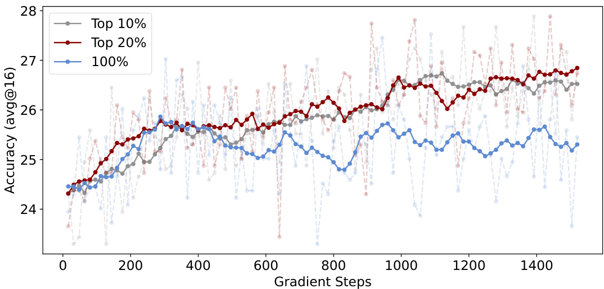

Beyond the 80/20 Rule: High-Entropy Minority Tokens Drive Effective Reinforcement Learning for LLM Reasoning
None
Abstract：論文の要旨 📌
この論文は、大規模言語モデル（LLM）の推論能力を向上させるための強力なアプローチである検証可能な報酬を用いた強化学習（RLVR: Reinforcement Learning with Verifiable Rewards）のメカニズムを解明しようとする研究です。これまでRLVRがなぜうまく機能するのかは、実はまだよく分かっていませんでした。そこで、本研究では「トークンエントロピーのパターン」という新しい視点から、RLVRを先駆的に探求しています。
💡 この論文の核心的な問い： LLMが複雑な問題を解くとき（推論するとき）、文章を構成する一つ一つの「トークン」（単語や文字の一部のようなもの）のうち、特にどのトークンが重要なのでしょうか？ そして、強化学習（RLVR）は、これらのトークンにどう作用して推論能力を高めているのでしょうか？
📝 発見１：思考の分岐点となる「高エントロピートークン」
まず、LLMが段階的に思考を組み立てる思考の連鎖（CoT: Chain-of-Thought）におけるトークンエントロピーのパターンを詳細に分析しました。
用語解説：トークンエントロピーとは？
トークンとは、LLMがテキストを処理する際の最小単位です（例：単語、サブワード）。LLMが次にどのトークンを生成するかは確率的に決まります。エントロピーとは、この「次にどのトークンが来るか」という確率分布の不確かさ・曖昧さの度合いを示す指標です。
- 高エントロピー：次に生成される可能性のあるトークンの選択肢が多く、モデルが「迷っている」状態。予測が難しい。
- 低エントロピー：次に生成されるトークンがほぼ一意に決まっており、モデルが「確信を持っている」状態。予測が易しい。
CoT推論での観察結果
分析の結果、以下のパターンが明らかになりました。
- 大部分のトークンは低エントロピー（例：「です」「ます」、定型的なフレーズ）。
- しかし、ごく一部のトークンだけが高エントロピーを示す。
そして、この高エントロピートークンこそが、モデルを多様な推論経路へと導く「重要な分岐点（forks）」として機能していることが分かりました。これらを分岐トークン（forking tokens）と名付けます。
... ... 分岐点! ... ...
RLVR訓練中の変化
さらに、RLVRによる訓練中にエントロピーパターンがどう進化するかを調査したところ…
- RLVRは、元となるベースモデルのエントロピーパターンをほぼそのまま維持する。
- そして驚くべきことに、RLVRは主に高エントロピートークン（つまり分岐トークン）のエントロピーを選択的に調整していることが判明しました。
これらの発見は、RLVRの学習効果において、高エントロピーの分岐トークンが極めて重要であることを強く示唆しています。
🚀 発見２：「80/20ルール」を超える効率的な学習法
これらの知見に基づき、研究チームはRLVRの学習方法を改善する仮説を立てました。「もし分岐トークンがそんなに重要なら、学習の焦点を分岐トークンだけに絞ったらどうなるだろう？」
提案：分岐トークン限定の勾配更新
具体的には、強化学習における方策の更新（方策勾配更新）を、エントロピーが高い上位20%の分岐トークンのみに限定する手法を試みました。
その結果は目覚ましいものでした！ 📊
Qwen3-8Bモデル
全てのトークンを使って学習した場合（フル勾配更新）と同等の性能を維持しました。
Qwen3-14B & Qwen3-32Bモデル
なんと、フル勾配更新の場合を大幅に上回る性能を達成！
- Qwen3-32B: AIME’25で +11.04ポイント, AIME’24で +7.71ポイント
- Qwen3-14B: AIME’25で +4.79ポイント, AIME’24で +5.21ポイント
この性能向上は、モデルサイズが大きくなるほど顕著になる強力なスケーリングトレンドを示しています。
「80/20ルール」越え！
これは、一般的に言われる「結果の80%は20%の原因から生じる」というパレートの法則（80/20ルール）をさらに超える発見です。わずか20%のトークンを利用するだけで、100%のトークンを利用した場合と同等かそれ以上の性能を引き出せたのです！
対照実験の結果
逆に、エントロピーが最も低い80%のトークンのみで訓練した場合、性能は著しく低下しました。
これらの結果は、RLVRの有効性が主に推論の方向性を決定する高エントロピートークンを最適化することによって生まれることを明確に示しています。
図1の解説
この図は論文の主要な発見を視覚的にまとめたものです。
(a) トークンの役割分担 🗺️
左側の図は、LLMが思考の連鎖（CoT）を生成する際のトークンの役割を示しています。
- 高エントロピーの少数トークン (High-entropy minority tokens)： 赤い点で示され、人が分岐路に立っているイラストで表現されています。これらは推論経路における「分岐点（forks）」であり、モデルが次にどの方向に進むかを選択する重要な箇所です。不確実性が高い（エントロピーが高い）ため、様々な可能性を秘めています。 どの道を選ぶ？
- 低エントロピーの多数トークン (Low-entropy majority tokens)： 青い点で示され、人が一本道を進んでいるイラストで表現されています。これらは既に選択された経路を補完したり、文法的に自然な続きを生成したりする役割を担います。不確実性が低い（エントロピーが低い）ため、ほぼ決まった道筋を辿ります。 道なりに進む
下のテキスト例「What is 1 + 1 in base 2? In decimal, 1 + 1 = 2. But how does that translate to base 2? Well, in binary [...]」では、"But" や "Well" のような接続詞が高エントロピートークン（分岐点）の例として挙げられています。
(b) 分岐トークン限定学習の効果 🚀
右側の棒グラフは、AIME24およびAIME25という数学推論ベンチマークにおける性能を示しています。
- 水色の棒 (all tokens)：全てのトークンを使ってRLVRで学習した場合の性能。
- ピンク色の棒 (fork only)：高エントロピーの分岐トークンのみを使ってRLVRで学習した場合の性能。
モデルサイズ（8B, 14B, 32B）が大きくなるにつれて、分岐トークンのみで学習した方が性能が大幅に向上する傾向が見られます（特に32Bモデル）。
点線は性能のトレンドを示しており、分岐トークンのみの学習（赤の破線）の方が、全トークン学習（青の破線）よりも急峻な右肩上がりになっています。
下部のイラストは、全トークン学習では全てのトークン（青と赤）に学習の重みが分散するのに対し、分岐トークン学習では分岐点となるトークン（赤）に集中的に学習が行われるイメージを示しています。
🏆 SoTA達成！
最大応答長20kの場合、提案手法を用いた32Bモデルは、パラメータ数600B未満のベースモデルに対するRLVRにおいて、AIME’24で63.5点、AIME’25で56.7点という新たな最高性能（SoTA: State-of-the-Art）を達成しました。さらに、最大応答長を29kに拡張することで、AIME’24のスコアは68.1点にまで向上しました。
🎯 結論と展望
総じて、本研究の結果は以下の重要な点を示しています。
-
1RLVRをトークンエントロピーという新しい切り口から理解する可能性。
-
2高エントロピーの少数派トークン（分岐トークン）を活用することで、RLVRを最適化し、LLMの推論能力をさらに向上させられる可能性。
この研究の意義
この研究は、LLMの「思考」のメカニズム解明に一歩近づくとともに、より効率的で高性能なLLM開発のための新たな道筋を示したと言えるでしょう。特に、学習対象を絞ることで計算コストを削減しつつ性能を向上できる可能性は、実用上非常に大きな意味を持ちます。
1 Introduction
このセクションでは、大規模言語モデル (LLM) の推論能力の進化、特にその中核技術である強化学習 (RL) の役割と、本論文が提案する新たな視点について解説します。LLMがどのようにして複雑な問題を解決する能力を獲得するのか、そのメカニズムの一端を明らかにすることを目指します。
LLM推論能力の飛躍的進歩とRLVRの役割
近年、大規模言語モデル (LLMs: Large Language Models) の推論能力は、数学やプログラミングといった専門的な領域で目覚ましい進歩を遂げています。この背景には、OpenAI o1、Claude 3.7、DeepSeek R1、Kimi K1.5、Qwen3といった最先端モデルで採用されているテスト時スケーリング手法 (test-time scaling methodologies) があります。
中核技術: RLVR
これらの改善を牽引する極めて重要な技術の一つが、検証可能な報酬を用いた強化学習 (RLVR: Reinforcement Learning with Verifiable Rewards) です。RLVRでは、モデルは自動化された正しさの検証に基づいて与えられるRLの目的関数を通じて出力を最適化します。
用語解説：RLVR
- 強化学習 (RL): エージェントが環境と相互作用しながら、試行錯誤を通じて最適な行動戦略を学習する機械学習の一分野です。
- 検証可能な報酬: 生成された出力が正しいかどうかを自動的に（例えば、数学問題の答えが一致するか、コードが正しく実行されるかなどで）検証し、その結果に基づいて報酬を与える仕組みです。
最近のRLVRの進歩は、アルゴリズムの革新、分野横断的な応用、そして直感に反する経験的な洞察からもたらされています。しかし、既存のRLVRの実装の多くは、どのトークンが実際に推論を促進するのかという点を深く理解しないまま、単純に全てのトークンに対して直接訓練を行っています。
既存のRLVR実装の課題点
これらのアプローチは、トークンが推論プロセスで果たす機能的な役割の多様性 (heterogeneous functional roles) を見過ごしており、連続的な推論の軌道における重要な決定点を優先的に扱えていないため、さらなる性能向上の妨げになっている可能性があります。
📌 例えるなら…
チームでプロジェクトを進める際、全員に同じ指示を出すのではなく、各メンバーの得意分野や重要な役割を理解し、それに合わせた指示を出す方が効率的ですよね。同様に、LLMの推論も、全てのトークンを同じように扱うのではなく、特に重要な役割を果たすトークンに注目する必要があるかもしれません。
本論文の革新的アプローチ：トークンエントロピーに着目
本論文では、RLVRの根底にあるメカニズムをトークンエントロピーのパターンという新しい視点から分析し、エントロピーが異なるトークンが推論性能にどのように影響を与えるかを調査します。
用語解説：トークンエントロピー
トークンエントロピーとは、LLMが次のトークンを生成する際の「不確かさ」や「予測の難しさ」の度合いを示す指標です。エントロピーが高いトークンは、次に続く可能性のある選択肢が多く、モデルがあまり確信を持てていないことを意味します。逆にエントロピーが低いトークンは、次に来るべきトークンがほぼ一意に定まっているような、予測しやすい状況を示します。
📊 エントロピーのイメージ:
- 高エントロピー: 「さて、次はどうしようかな… 🤔」（選択肢が多い、重要な分岐点）
- 低エントロピー: 「これはこう続くのが自然だよね 😊」（ほぼ決まった言い回し、自明な続き）
思考連鎖 (CoT) におけるトークンエントロピーの発見
私たちはまず、LLMの思考連鎖 (CoT: Chain-of-Thought) プロセスにおいて、トークンエントロピーの分布が特徴的なパターンを示すことを指摘します。
用語解説：思考連鎖 (CoT)
思考連鎖 (CoT) とは、LLMが複雑な問題に対して、最終的な答えだけでなく、そこに至るまでの中間的な推論ステップを明示的に生成するプロセスのことです。これにより、LLMはより複雑な推論タスクをこなせるようになります。
エントロピー分布の特徴
CoTプロセスで生成されるトークンの大多数は低エントロピー（予測しやすい、確実性が高い）であるのに対し、ごく一部の重要なトークン群が高エントロピー（予測しにくい、不確実性が高い）で出現することが分かりました。
トークンの機能的役割
これら2種類のトークンのテキスト上の意味を比較すると、以下の傾向が見られました。
- 平均エントロピーが最も低いトークン群: 主に進行中の言語構造を完成させる役割（例: 文末の句読点、助詞、定型的なフレーズの続きなど）。
- 平均エントロピーが最も高いトークン群: 複数の潜在的な経路の中から推論の軌道を決定する極めて重要な決定点（フォーク）として機能します。これらは推論が複数の方向に分岐しうる「分かれ道」のようなものです。（図1(a)参照）
図1 の解説
(a) CoTにおけるトークンエントロピーの役割 (左図): この図は、思考連鎖 (CoT) プロセスにおけるトークンの役割を視覚化したものです。黒い線が推論の主要な経路を表し、その上に点が連なっています。
- 赤い点 (高エントロピー少数派トークン): これらは「フォーク・ザ・パス (道を分岐させる)」トークンと呼ばれ、推論の方向性を決定する重要な分岐点を示します。イラストでは、旅人が複数の道が分かれる岐路に立っているイメージで表現されています。これらのトークンでは、LLMは次に何を生成すべきかについて不確実性が高く、多様な選択肢を検討しています。
- 青い点 (低エントロピー多数派トークン): これらは「フォロー・ザ・パス (道に従う)」トークンと呼ばれ、既に決定された推論の経路に沿って、文脈を補完したり、既存の構造を完成させたりする役割を果たします。イラストでは、旅人が一本道を着実に進んでいるイメージです。これらのトークンでは、次に生成すべき内容は比較的明確です。
下のテキスト例 "What is 1 + 1 in base 2? In decimal, 1 + 1 = 2. But how does that translate to base 2? Well, in binary [...]" では、"But how" や "Well, in binary" のような部分が、話題を転換したり新しい情報を導入したりする重要な箇所であり、高エントロピーを持つ可能性が高い「フォークトークン」の例です。
(b) フォークトークンを用いたRLVRの性能 (右図): この2つの棒グラフは、AIME24およびAIME25という数学推論ベンチマークにおけるRLVRの性能を示しています。横軸はモデルのパラメータサイズ (8B, 14B, 32B)、縦軸はAcc@16 (16回試行した場合の正解率) です。
- 青い棒 (all tokens): 全てのトークンを使用してRL訓練を行った場合の性能。
- 赤い棒 (fork only): フォークトークン（高エントロピートークン）のみを使用してRL訓練を行った場合の性能。
モデルサイズが大きくなるにつれて（8B → 14B → 32B）、フォークトークンのみを用いた訓練（赤い棒）が、全トークンを用いた訓練（青い棒）と比較して、同等以上の、あるいは大幅に優れた性能向上を示していることがわかります。特に32Bモデルではその差が顕著です。これは、高エントロピートークンに集中した訓練が、特に大規模モデルにおいて非常に効果的であることを示唆しています。
📝 さらに、この「フォーク」としての役割を検証するため、デコーディング中にこれらの高エントロピーなフォークトークンのエントロピーを手動で調整する制御実験を行いました。その結果、
- フォークトークンのエントロピーを適度に増加させると、推論性能が測定可能なほど向上しました。
- 逆に、フォークトークンのエントロピーを人為的に減少させると、性能が低下しました。
これらの実験結果は、これらの高エントロピートークンが高いエントロピーを維持することの重要性と、「フォーク」としての役割を裏付けています。
🔍 また、RLVR訓練中にトークンエントロピーがどのように変化するかを分析したところ、以下のことが明らかになりました。
- 推論モデルは、訓練の進行に伴い、ベースモデル（訓練前の初期モデル）のエントロピーパターンを大部分保持し、変化は徐々にかつ比較的小規模なものでした。
- RLVRは主に高エントロピートークンのエントロピーを変化させ、低エントロピートークンのエントロピーはごくわずかな範囲でしか変動しませんでした。
これらの観察結果は、高エントロピーの少数派トークンがCoTおよびRLVR訓練において極めて重要な役割を果たしている可能性を示唆しています。
フォークトークンに基づくRLVRの改良と驚くべき成果
「フォークトークン」の発見に基づき、本論文ではRLVRをさらに改良しました。具体的には、ポリシー勾配更新 (policy gradient updates) を、エントロピーが最も高い上位20%のトークンにのみ保持し、残りの80%のトークンの勾配をマスク (masking gradients) する（つまり、学習に利用しない）という手法を提案します。
用語解説：ポリシー勾配更新と勾配マスク
- ポリシー勾配更新: 強化学習において、モデルの「ポリシー」（ある状態でどのような行動を取るかの方針）を改善するために、報酬に基づいて勾配（パラメータをどちらの方向に調整すれば良いかを示す指標）を計算し、モデルのパラメータを更新することです。
- 勾配マスク: 特定のトークンについては、計算された勾配を学習に使わないようにすることです。これにより、学習の影響を特定のトークンに集中させることができます。
驚くべきことに、このアプローチは、わずか20%のトークンしか利用しないにもかかわらず、Qwen3-8Bベースモデルにおいて、全勾配更新（全てのトークンを学習に利用する従来手法）と比較して競争力のある推論性能を達成できました。
さらに、この手法の有効性はモデルサイズが大きくなるにつれて増し、
- Qwen3-32Bベースモデルでは、AIME'25で+11.04ポイント、AIME'24で+7.71ポイントの性能向上。
- Qwen3-14Bベースモデルでは、AIME'25で+4.79ポイント、AIME'24で+5.21ポイントの性能向上。
という結果が得られました (図1(b)参照)。
新記録樹立！
特筆すべきは、わずか20%の高エントロピートークンで訓練された32Bモデルが、AIME'24でスコア63.5、AIME'25でスコア56.7を達成し、600Bパラメータ未満のベースモデルから直接訓練された推論モデルとして新たな最高性能 (SoTA: State-of-the-Art) を樹立したことです。最大応答長を20kから29kに延長することで、この32BモデルのAIME'24スコアは63.5からさらに68.1へと向上しました。
対照的に、エントロピーが最も低い80%のトークンのみで訓練すると、深刻な性能低下が見られました。
💡 これらの観察結果は、80/20ルール（パレートの法則）さえも超える可能性を示唆しています。つまり、全体の20%のトークンが、100%のトークンを使用した場合と同等かそれ以上の性能を達成するだけでなく、場合によってはそれを大幅に上回るということです。これは、推論の軌道における重要な決定点として機能する高エントロピーの少数派トークンが、RLVRにおける性能向上のほぼ全てを担っていることを示しています。
なぜ少数の高エントロピートークンで高い性能が出るのか？
最後に、なぜ高エントロピートークンのごく一部を保持するだけでRLVRで高い性能が得られるのかを、一連のアブレーションスタディ (ablation studies) を通じて探求しました。
用語解説：アブレーションスタディ
アブレーションスタディとは、モデルや手法の構成要素を一つずつ取り除いたり変更したりすることで、各要素が全体の性能にどの程度貢献しているかを調べる分析手法です。
具体的には、選択するフォークトークンの割合を20%から10%に減らしたり、逆に50%や100%に増やしたりして、それぞれの推論メトリクスと訓練プロセス中の全体的なエントロピーを報告しました。
実験結果から、以下のことが明らかになりました。
- 高エントロピートークンのうち約20%を保持することが、探索 (exploration) と性能の最適なバランスをもたらす。
- この20%から逸脱すると、全体的なエントロピーが減少し、探索が弱まり、性能が悪化する。
考察
これは、高エントロピートークンのうち、重要な一部のサブセットのみがRL中の探索に有益に寄与し、他のトークンは中立的であるか、あるいは有害でさえある可能性を示唆しています。
- 割合を10%に減らすと、いくつかの有用なトークンが除外され、探索が弱まる。
- 割合を50%や100%に増やすと、低エントロピートークンが追加され、これもまた探索の有効性を低下させる。
また、興味深いことに、高エントロピートークンの上位20%を保持する戦略は、
- 32Bモデルで最大の性能向上をもたらし、
- 次に14Bモデル、
- 8Bモデルでは最も小さな向上、
という結果になりました。これは、モデルサイズが小さい場合、その容量 (capacity) が不十分であるため、探索の増加から得られる恩恵が制限されるためかもしれません。これらの発見は、RLVRにおいて適切な割合の高エントロピートークンを保持することの重要性を強調しています。モデルサイズが大きくなるにつれて、高エントロピートークンを選択する戦略は効果的にスケールするようです。
まとめと本論文の貢献
まとめると、本研究の発見は、LLMの推論能力を形成する上で、高エントロピーの少数派トークンが極めて重要な役割を果たしていることを強調するものです。
私たちは、この研究がトークンエントロピーの観点からのさらなる分析を促し、これらのトークンを戦略的に活用して推論性能を向上させる、より効果的なRLVRアルゴリズムの開発に繋がることを期待しています。
本論文の主なポイント (Key Takeaways)
-
1📌 CoTにおけるエントロピーパターン (§3):
思考連鎖 (CoT) では、トークンの大部分は低エントロピーで生成されますが、ごく一部のサブセットが高エントロピーを示します。これらの高エントロピー少数派トークンは、しばしば推論プロセスにおける「フォーク（分岐点）」として機能し、モデルを多様な推論経路へと導きます。これらの重要なフォークトークンで高いエントロピーを維持することは、推論性能にとって有益です。 -
2📌 RLVR訓練中のエントロピー変化 (§4):
RLVR訓練中、推論モデルはベースモデルのエントロピーパターンを大部分保持し、変化は徐々にかつ小規模です。RLVRは主に高エントロピートークンのエントロピーを調整し、低エントロピートークンのエントロピーは狭い範囲でしか変動しません。 -
3📌 高エントロピートークンが性能向上を牽引 (§5):
RLVR中の推論性能向上のほぼ全ては、高エントロピーの少数派トークンによってもたらされます。一方、低エントロピーの多数派トークンはほとんど貢献しないか、あるいは性能を妨げる可能性さえあります。一つの可能な説明は、性能が収束する前に、高エントロピートークンの一部（本実験では約20%）が探索を促進するのに対し、低エントロピートークンは最小限の利益しか提供しないか、探索を妨げる可能性があるということです。 -
4📌 さらなる考察 (§6):
上記の洞察に基づき、(i) 監視付きファインチューニング (SFT) が記憶に頼りがちなのに対し、RLが汎化する理由としての高エントロピー少数派トークン、(ii) LLMのCoTと従来のRL軌道で見られる異なるエントロピーパターンを形成する事前知識と可読性の要件、(iii) RLVRにおけるエントロピーボーナスに対するクリップハイヤーの利点についてさらに議論します。
2 Preliminaries
このセクションでは、本論文の中心的な議論を理解するために不可欠な基礎知識を準備します。特に、大規模言語モデル (LLM) の推論プロセスを分析する上で重要なトークンエントロピーの計算方法と、LLMの推論能力を強化学習で向上させるための主要なアルゴリズムであるRLVR (Reinforcement Learning with Verifiable Rewards)について、その基本的な仕組みを解説します。これらの知識は、後のセクションで展開される本論文の提案手法や実験結果を深く理解するための土台となります。
このセクションの学びポイント１
トークンエントロピー計算: LLMが次にどの単語（トークン）を生成するかの「不確かさ」を測る指標。その定義と計算方法を理解します。
このセクションの学びポイント２
RLVRアルゴリズム: LLMの出力を検証可能な報酬で強化学習する手法群。PPO、GRPO、DAPOといった代表的なアルゴリズムの概要を把握します。
2.1 Token entropy calculation
✏️ まず、この論文で頻繁に登場する「トークンエントロピー」とは何か、そしてそれがどのように計算されるのかを見ていきましょう。
時刻 t におけるトークン t のトークンレベル生成エントロピー（論文中では簡潔にトークンエントロピーと呼ばれます）は、次のように定義されます。
ここで、各記号の意味は以下の通りです。
- \( H_t \): 時刻 t におけるトークンエントロピー。LLMが次にどのトークンを生成するかについての不確かさの度合いを示します。値が大きいほど、次に生成されるトークンの予測が難しい（多様なトークンが生成されうる）ことを意味します。
- \( V \): 語彙サイズ (vocabulary size)。LLMが扱うことができるトークン（単語やサブワード）の総種類数です。
- \( p_{t,j} \): 時刻 t において、語彙内の j 番目のトークンが生成される確率。
- \( \sum_{j=1}^{V} \): 語彙内の全てのトークン（1番目からV番目まで）について和を取ることを意味します。
- \( \log \): 対数関数。通常、情報理論では底2の対数（ビット単位）や自然対数（ナット単位）が使われます。
そして、この確率分布 \( (p_{t,1}, \cdots, p_{t,V}) = \pmb{p}_t \) は、次のように計算されます。
📝 確率分布の計算ステップ
- \(T < 1\): より確率の高いトークンが選ばれやすくなり、決定的・保守的な出力になります。
- \(T > 1\): 確率の低いトークンも選ばれやすくなり、多様で創造的な出力になります。
- \(T = 1\): ロジットをそのまま使います。
強化学習の文脈では、オフポリシー設定という状況があります。これは、実際にシーケンス（一連のトークン）を生成する方策（ポリシー）であるロールアウト方策 (rollout policy) \(\pi_{\phi}\) と、学習対象の方策である学習方策 (training policy) \(\pi_{\theta}\) が異なる場合（つまり \(\phi \neq \theta\)）を指します。このような状況でも、トークンエントロピー \(H_t\) は、常に学習方策 \(\pi_{\theta}\) を用いて式(1)に従って計算されます。これは、学習方策自身の不確かさを測るためです。
トークンエントロピーは「分布」に対するもの
📌 重要な注意点として、「トークンエントロピー」は、特定のあるトークンそのものの性質ではなく、そのトークンが生成される際の「トークン生成分布」\(\pmb{p}_t\) に対応するという点です。
論文全体を通して、トークンエントロピー \(H_t\) は、インデックス t におけるエントロピーを指します。これは、そのインデックスで実際にサンプリングされた特定のトークン \(o_t\) によって決まるのではなく、そのトークンを生成した確率分布 \(\pmb{p}_t\) によって決まります。
便宜上、分布 \(\pmb{p}_t\) からサンプリングされたトークン \(o_t\) について議論する際に、それに関連するエントロピーを \(H_t\) と表現し、\(o_t\) のトークンエントロピーとして言及することがあります。しかし、これはあくまで表記の簡略化です。
🔍 例えば、もしインデックス t とは異なる別のインデックス \(t'\)（\(t' \neq t\)）があり、そこで生成されたトークン \(o_{t'}\) がたまたま \(o_t\) と同じであったとしても（つまり \(o_{t'} = o_t\)）、\(o_{t'}\) のトークンエントロピー \(H_{t'}\) は、必ずしも \(H_t\) と等しいとは限りません。なぜなら、それぞれのトークンが生成された文脈（それまでのトークン列）が異なるため、確率分布 \(\pmb{p}_t\) と \(\pmb{p}_{t'}\) が異なる可能性があるからです。
文脈A: "An apple a day..."
トークン "keeps" の生成時
\(\pmb{p}_{\text{keeps (A)}}\) \(H_{\text{keeps (A)}}\)
(エントロピー低めかも？)
文脈B: "She carefully keeps..."
トークン "keeps" の生成時
\(\pmb{p}_{\text{keeps (B)}}\) \(H_{\text{keeps (B)}}\)
(エントロピー高めかも？)
同じ "keeps" というトークンでも、文脈によって生成確率分布が変わり、エントロピーも変わる可能性があります。
2.2 RLVR Algorithms
🤖 次に、LLMの推論能力を向上させるために用いられる強化学習の手法群、RLVR (Reinforcement Learning with Verifiable Rewards) の中で、この論文と関連の深いアルゴリズムを見ていきましょう。RLVRは、生成された出力の正しさを自動的に検証し、その結果を報酬として強化学習を行うアプローチです。
PPO (Schulman et al., 2017) は、RLVRで広く採用されている方策勾配アルゴリズム (policy gradient algorithm)の一つです。学習を安定させるために、方策（ポリシー）の更新を、更新前の古い方策 \(\pi_{\theta_{\mathrm{old}}}\) から大きく離れないように制限します。これは、以下のクリップされた代理目的関数 (clipped surrogate objective)を最大化することで達成されます。
ここで、
$$ r _ { t } ( \theta ) = \frac { \pi _ { \theta } \big ( o _ { t } \big | q , o _ { < t } \big ) } { \pi _ { \theta _ { \mathrm { o l d } } } \big ( o _ { t } | q , o _ { < t } \big ) } $$各要素の説明：
- \(J_{\mathrm{PPO}}(\theta)\): PPOの目的関数。これを最大化するように方策パラメータ \(\theta\) を更新します。
- \(\mathbb{E}_{ (q,a) \sim \mathcal{D}, o \sim \pi_{\theta_{\mathrm{old}}}(\cdot|q) }[\cdot]\): データセット \(\mathcal{D}\) からサンプリングされた入力クエリ \(q\) と対応する正解 \(a\)、そして古い方策 \(\pi_{\theta_{\mathrm{old}}}\) によって生成された応答 \(o\) に対する期待値。
- \(\mathrm{clip}(r_t(\theta), 1-\epsilon, 1+\epsilon)\): 確率比 \(r_t(\theta)\) を \([1-\epsilon, 1+\epsilon]\) の範囲にクリップ（制限）します。これにより、方策の更新が急激に大きくなるのを防ぎます。
- \(\epsilon \in \mathbb{R}\): クリッピング範囲を決定するハイパーパラメータ。論文では通常2.0に設定されるとありますが、一般的なPPOでは0.1や0.2が多いです。この論文の文脈では2.0が使われている点に注意。
- \(\hat{A}_t\): 推定されたアドバンテージ (estimated advantage)。\(t\) ステップ目の行動が平均よりどれだけ良かったかを示します。通常、価値ネットワーク (value network) を用いて計算されます。
- \(r_t(\theta)\): 確率比 (probability ratio)。新しい方策 \(\pi_{\theta}\) と古い方策 \(\pi_{\theta_{\mathrm{old}}}\) の下で、特定の行動（トークン \(o_t\) の生成）が起こる確率の比です。
PPOのクリッピングの役割
PPOの目的関数における min と clip の部分は、学習を安定させるための鍵です。
- もしアドバンテージ \(\hat{A}_t\) が正（良い行動だった場合）： 目的関数は \(r_t(\theta)\hat{A}_t\) と \((1+\epsilon)\hat{A}_t\) の小さい方を取ります。これにより、確率比 \(r_t(\theta)\) が \(1+\epsilon\) を超えて過度に大きくなる（方策が急激に変化する）のを防ぎます。
- もしアドバンテージ \(\hat{A}_t\) が負（悪い行動だった場合）： 目的関数は \(r_t(\theta)\hat{A}_t\) と \((1-\epsilon)\hat{A}_t\) の小さい方（実際には絶対値が大きい方、つまりよりペナルティが大きくなる方）を取ろうとしますが、\(r_t(\theta)\) が \(1-\epsilon\) より小さくなると、クリップされた項 \(\mathrm{clip}(r_t(\theta), 1-\epsilon, 1+\epsilon)\hat{A}_t\) は \((1-\epsilon)\hat{A}_t\) となります。 この場合、\(r_t(\theta)\) が小さくなる（新しい方策がその行動を取る確率が古い方策よりずっと低くなる）と、\(r_t(\theta)\hat{A}_t\) の方が \((1-\epsilon)\hat{A}_t\) よりも大きくなる（負の数が0に近づく）可能性があります。PPOの目的関数は最大化なので、\(\hat{A}_t < 0\) のときは、より小さい値（より大きなペナルティ）を選びます。つまり、\(r_t(\theta)\) が \(1-\epsilon\) を下回っても、ペナルティが過度に小さくならないように抑制します。
これにより、新しい方策が古い方策から大きく逸脱することを防ぎ、学習プロセスを安定させます。
GRPO (Shao et al., 2024) は、PPOの式(2)のクリップされた目的関数を基礎としつつ、価値ネットワークを使用しない点が特徴です。代わりに、アドバンテージをサンプリングされた応答グループ内の平均報酬を使って推定します。
具体的には、各入力クエリ \(q\) とその正解 \(a\) に対して、ロールアウト方策 \(\pi_{\theta_{\mathrm{old}}}\) が \(G\) 個の応答のグループ \(\{\pmb{o}^i\}_{i=1}^G\) を生成します。それぞれの応答には、対応する結果報酬 \(\{R^i\}_{i=1}^G\) が与えられます（\(G \in \mathbb{R}\) はグループサイズ）。
そして、推定アドバンテージ \(\hat{A}_t^i\) は次のように計算されます。
ここで、報酬 \(R^i\) は以下のように定義されます。
$$ R ^ { i } = \left\{ \begin{array} { l l } { 1.0 \quad } & { \mathrm { if } \quad \mathrm { is\_equivalent } ( a , o ^ { i } ) , } \\ { 0.0 \quad } & { \mathrm { otherwise } . } \end{array} \right. $$解説：
- \(\hat{A}_t^i\): i 番目の応答における時刻 t での推定アドバンテージ。
- \(R^i\): i 番目の応答 \(\pmb{o}^i\) が正解 \(a\) と等価であるか (\(\mathrm{is\_equivalent}(a, o^i)\)) によって決定されるバイナリ報酬（1.0か0.0）。
- \(\mathrm{mean}(\{R^j\}_{j=1}^G)\): グループ内の全応答の報酬の平均値。
- \(\mathrm{std}(\{R^j\}_{j=1}^G)\): グループ内の全応答の報酬の標準偏差。報酬を正規化するために使用されます。
GRPOは、この変更されたアドバンテージ推定に加えて、PPOのクリップされた目的関数（式(2)）にKLペナルティ項 (KL penalty term)を追加します。KLペナルティは、更新後の方策が古い方策から大きく逸脱しすぎないように制約をかける役割があります。
GRPOは価値ネットワークを不要とすることで、モデルの複雑さや学習コストを削減する可能性があります。アドバンテージの推定を、同一入力に対する複数の生成結果の相対的な良し悪しに基づいて行う点がユニークです。
DAPO (Yu et al., 2025) はGRPOをさらに発展させたアルゴリズムです。以下の変更点が特徴です：
- KLペナルティの削除
- クリップハイアーメカニズム (clip-higher mechanism)の導入（\(\epsilon_{\mathrm{high}}\)）
- 動的サンプリング (dynamic sampling)の組み込み
- トークンレベルの方策勾配損失 (token-level policy gradient loss)の適用
- 過長報酬シェーピング (overlong reward shaping)の採用
これらの変更により、DAPOは以下の最大化目的関数を持ちます。ここで \(r_t^i(\theta)\) は式(2)で定義されたものと同様で、\(\hat{A}_t^i\) は式(3)で計算されます。
制約条件: \( 0 < \left| \left\{ o ^ { i } \vert \mathrm { ~is\_equivalent } ( a , o ^ { i } ) \right\} \right| < G \)
解説：
- \(\mathcal{J}_{\mathrm{DAPO}}(\theta)\): DAPOの目的関数。
- \(\sum_{i=1}^G |o^i|\): グループ内の全応答の総トークン数。損失をトークンごとに正規化します。
- \(\epsilon_{\mathrm{low}}\), \(\epsilon_{\mathrm{high}}\): クリッピングのためのハイパーパラメータ。PPOの \(\epsilon\) と似ていますが、DAPOでは上限と下限を個別に設定できる柔軟性があります（特に \(\epsilon_{\mathrm{high}}\) によるクリップハイアー）。
- 制約条件: グループ \(G\) 内の応答のうち、正解と等価な応答の数が0より大きく、かつ \(G\) より小さいことを要求します。つまり、全てが不正解でも、全てが正解でもないグループのみを学習に使用します。これにより、学習信号がより有益になることを目指します。
DAPOは、価値ネットワークを持たないRLVRアルゴリズムの中で最先端 (state-of-the-art)の一つとされています。本論文では、このDAPOをRLVR実験のベースラインとして使用します。
DAPOの主要な改善点（おさらい）
クリップハイアー
確率比の上限クリップ値 \(\epsilon_{\mathrm{high}}\) を調整することで、特に良い行動に対する更新の大きさを制御し、学習の探索を促進する可能性があります。
動的サンプリング
学習の進行度合いやモデルの性能に応じてサンプリング戦略を動的に変えることで、より効果的な学習データを得ようとします。
トークンレベル勾配
応答全体ではなく、個々のトークンレベルで方策勾配を計算し適用することで、より細かい粒度での学習を目指します。
過長報酬シェーピング
非常に長いシーケンスを扱う際に、報酬の割り当て方を工夫することで、学習の効率と安定性を向上させます。
これで、論文の核心部分を理解するための準備が整いました！ 🚀
3 Analyzing Token Entropy in Chain-of-Thought Reasoning
このセクションでは、大規模言語モデル (LLM) が思考の連鎖 (Chain-of-Thought, CoT) と呼ばれるステップバイステップの推論を行う際に、各トークンが持つ「エントロピー」という情報量に着目し、そのパターンを詳細に分析します。これまでの研究 (Yang et al., 2025; Yu et al., 2025; Yue et al., 2025b) でもCoT推論における生成エントロピーの重要性は指摘されてきましたが、それらは主に全トークンのエントロピーをまとめて分析するものでした。
ここでは、トークンレベルでエントロピーを掘り下げ、個々のトークンが推論プロセスでどのような役割を果たしているのかを明らかにすることを目指します。🔑
この分析のために、以下の設定で実験を行いました。
- 使用モデル: Qwen3-8B (Yang et al., 2025)。これは、同程度のパラメータ数を持つモデルの中で、最新かつ非常に高い推論能力を持つものの一つです。
- データセット: AIME’24 および AIME’25 の問題を使用しました。これらは数学の競技プログラミングの問題で、高度な推論能力が要求されます。
- デコーディング温度: T = 1.0 に設定しました。これは、モデルが多様な応答を生成しやすくするための一般的な設定です。
- 思考モード: 全ての質問に対して、モデルが思考プロセスを明示的に記述する「thinking mode」を強制的に使用させました。
- 収集データ: 100万を超える応答トークンを収集しました。
- エントロピー計算: 各トークンのエントロピーは、以前のセクション (セクション2.1) で定義されたEquation (1)に従って計算しました。
トークンエントロピーとは？
トークンエントロピー \(H_t\) は、ある文脈 (\(q, o_{
これらの収集された100万トークンのエントロピー値に関する統計分析結果は、論文中のFigure 2に示されています。また、長いCoT応答全体におけるトークンエントロピーの視覚的な表現は、論文の付録にあるFigures 12から17で提供されています。
これらの分析から、CoT推論における特徴的なエントロピーパターンが明らかになりました。✏️
Entropy Pattern 1 in CoTs: 少数の高エントロピートークンと多数の低エントロピートークン
最初の発見は、CoT推論において生成されるトークンのエントロピーには顕著な偏りがあるということです。
パターン1 通常、ごく一部のトークンのみが高エントロピーで生成され、大多数のトークンは低エントロピーで出力されます。
論文のFigure 2(a)（ここではその内容を解説します）を見ると、この傾向が明確に分かります。
低エントロピートークンが大多数
生成されるトークンの大部分は、エントロピーが非常に小さい値を示します。これは、モデルがこれらのトークンを高い確信度で予測していることを意味します。
具体的には、収集されたトークンのうち、約半数（約50.64%）のエントロピーが \(10^{-2}\) 未満でした。これは非常に低い値です。
大部分は予測しやすい！
高エントロピートークンは少数派
一方で、高いエントロピーを持つトークンは少数派です。これらのトークンは、モデルにとって予測が難しく、複数の可能性の中から選択されたことを示唆します。
具体的には、全トークンのうち20%のみがエントロピー0.672より大きい値を持ちました。
一部は予測が難しい！
📊イメージ: トークンエントロピーの分布
（論文のFigure 2(a)の概念図）
Entropy Pattern 2 in CoTs: トークンの役割とエントロピーの関係
次に、トークンのエントロピーの大きさと、そのトークンがCoT推論の中で果たす役割との間に関連性が見られました。
パターン2 最もエントロピーが高いトークンは、典型的には推論の2つの連続する部分間の論理的な繋がりを橋渡しする役割を果たします。一方、最もエントロピーが低いトークンは、文の現在の部分を完成させたり、単語の構築を終えたりする傾向があります。その他のトークンは、これら2つの機能を様々な度合いで組み合わせています。
このパターンを明らかにするために、論文のFigure 2(b)と(c)では（ここではその内容を解説します）、収集した100万トークンの中から、出現頻度が100回以上のトークンに限定し（平均エントロピーに対するノイズの影響を軽減するため）、平均エントロピーが最も高い100トークンと最も低い100トークンを選び出しています。
高エントロピートークンの特徴 (Figure 2(b)より)
これらのトークンは、文内や文をまたいで論理的な接続詞として機能することが多いです。
- 対比や転換を示す: "wait", "however", "unless"
- 進行や追加を示す: "thus", "also"
- 因果関係を示す: "since", "because"
また、数学的な導出においては、仮定、既知の条件、または定義を導入するためによく現れます。
- 仮定・条件・定義: "suppose", "assume", "given", "define"
![高エントロピートークンは分岐点](data:image/svg+xml;charset=UTF-8,%3Csvg%20width%3D%2280%22%20height%3D%2280%22%20viewBox%3D%220%200%20100%20100%22%20xmlns%3D%22http%3A//www.w3.org/2000/svg%22%3E%3Cdefs%3E%3Cstyle%3E.txt%20%7B%20font-family%3A%20%27Yomogi%27%2C%20cursive%3B%20font-size%3A%2012px%3B%20%7D%20.line%20%7B%20stroke%3A%20%234a6fa5%3B%20stroke-width%3A%202%3B%20stroke-linecap%3A%20round%3B%20%7D%20.node%20%7B%20fill%3A%20%23ff7e5f%3B%20stroke%3A%20%232c3e50%3B%20stroke-width%3A%201%3B%20%7D%3C/style%3E%3C/defs%3E%3Cpath%20class%3D%22line%22%20d%3D%22M20%2050%20L50%2030%22/%3E%3Cpath%20class%3D%22line%22%20d%3D%22M20%2050%20L50%2070%22/%3E%3Ccircle%20class%3D%22node%22%20cx%3D%2220%22%20cy%3D%2250%22%20r%3D%225%22/%3E%3Ccircle%20class%3D%22node%22%20cx%3D%2250%22%20cy%3D%2230%22%20r%3D%225%22/%3E%3Ccircle%20class%3D%22node%22%20cx%3D%2250%22%20cy%3D%2270%22%20r%3D%225%22/%3E%3Ctext%20x%3D%2260%22%20y%3D%2235%22%20class%3D%22txt%22%3E推論A%3C/text%3E%3Ctext%20x%3D%2260%22%20y%3D%2275%22%20class%3D%22txt%22%3E推論B%3C/text%3E%3Ctext%20x%3D%2225%22%20y%3D%2255%22%20class%3D%22txt%22%20font-weight%3D%22bold%22%3E高エントロピー%3C/text%3E%3C/svg%3E)
論理の橋渡し役！
低エントロピートークンの特徴 (Figure 2(c)より)
これらのトークンは、非常に決定論的に出力される傾向があります。
- 単語の接尾辞: 例: "-ing", "-tion"
- ソースコードの断片: 例: "()", ";"
- 数式の構成要素: 例: "=", "+", "x"
これらは文脈上、ほぼ一意に定まる部分であり、モデルは高い確信度でこれらを生成します。

文の仕上げ役！
さらに、論文の付録のFigures 12から17（ここでは引用しませんが、論文を参照してください）では、長いCoT応答におけるトークンエントロピーを詳細に可視化しており、最高エントロピー群または最低エントロピー群に属さないほとんどのトークンが、橋渡し機能と継続機能を様々な度合いで混ぜ合わせていることが示されています。
図: トークンエントロピーのカラースケール例 (論文Figure 17より引用)。青色が低エントロピー、赤色が高エントロピーを示します。
High-entropy tokens as "forks" in chain-of-thoughts (思考の連鎖における「分岐点」としての高エントロピートークン)
上記で観察された2つのエントロピーパターンに基づき、研究者たちは高エントロピートークンを「分岐トークン (forking tokens)」と呼んでいます。これらのトークンは、推論プロセスにおいて高い不確実性を伴い、しばしば異なる潜在的な思考の枝分かれ（ブランチ）へと導くためです。分岐点では、次にどちらの道に進むか選択肢が多く、その選択が推論の方向性を大きく左右します。
高エントロピートークンは、推論の進む方向を決定する重要な「分岐点」として機能します。
この「分岐トークン」の役割を定量的にさらに確認するため、AIME 2024とAIME 2025の評価において、分岐トークンとそれ以外のトークンに異なるデコーディング温度を割り当てる実験を行いました。具体的には、これらの温度の様々な組み合わせがモデルの振る舞いに与える影響を分析するため、各トークン \(t\) の確率分布 \(\pmb{p}_t'\) を以下のように調整します。
ここで、各記号の意味は以下の通りです。
- \(\pmb{z}_t \in \mathbb{R}^V\): トークン \(t\) に対するソフトマックス関数適用前のロジット（生のスコア）。\(V\) は語彙サイズ。
- \(T_t' \in \mathbb{R}\): トークン \(t\) に対する調整後の温度。
- \(h_{\mathrm{threshold}} \stackrel{\cdot}{=} 0.672\): 分岐トークンとそれ以外のトークンを区別するためのエントロピー閾値。これは、前述のサンプリングされた100万トークンにおける80パーセンタイル値として推定されました（つまり、エントロピーが高い上位20%のトークンを分岐トークンとみなす）。
- \(T_{\mathrm{high}} \in \mathbb{R}\): 分岐トークン（高エントロピートークン）に適用する温度。
- \(T_{\mathrm{low}} \in \mathbb{R}\): それ以外のトークン（低エントロピートークン）に適用する温度。
デコーディング時の温度パラメータは、モデルの出力のランダム性を制御します。
- 温度が高い (\(T > 1\)): 確率分布がより平坦になり、多様な（時には予期しない）トークンが選ばれやすくなります。探索的・創造的な応答が期待できる反面、支離滅裂になるリスクも。
- 温度が低い (\(T < 1\)): 確率分布がより尖鋭になり、最も確率の高いトークンが選ばれやすくなります。決定的・保守的な応答が期待できる反面、単調になる可能性も。
- 温度が1 (\(T = 1\)): 元の確率分布をそのまま使用します。
異なる \(T_{\mathrm{high}}\) と \(T_{\mathrm{low}}\) の値を設定した場合の影響を、論文のFigure 3に示しています。
Figure 3: AIME 2024とAIME 2025の平均スコア。赤線: \(T_{\mathrm{low}} = 1\) で \(T_{\mathrm{high}}\) を変化させた場合。青線: \(T_{\mathrm{high}} = 1\) で \(T_{\mathrm{low}}\) を変化させた場合。
Figure 3 からの洞察 🔍
- \(T_{\mathrm{high}}\) を下げる（赤線、左側）と、\(T_{\mathrm{low}}\) を下げる（青線、左側）場合と比較して、パフォーマンスが著しく低下します。これは、分岐トークンの多様性を抑圧すると、推論能力が悪影響を受けることを示唆しています。
- \(T_{\mathrm{high}}\) を上げる（赤線、右側）と、\(T_{\mathrm{low}}\) を上げる（青線、右側）場合よりも、パフォーマンスが大幅に向上します。\(T_{\mathrm{low}}\) を上げすぎると、LLMが意味不明な出力を生成することさえあります。これは、分岐トークンにおいて多様な選択肢を探索することが推論に有益であることを示しています。
これらの結果は、分岐トークン（高エントロピートークン）は他のトークンと比較して相対的に高い温度を割り当てることで恩恵を受けることを示唆しています。分岐トークンは元々他のトークンよりも高いエントロピーを示すことを考えると、この結果は、それらがさらに高いエントロピーレベルで動作する必要性を裏付けています。この観察は、高エントロピーが多様な推論方向への分岐を可能にするという、「分岐点」としての役割と一致しています。つまり、重要な意思決定の場面では、ある程度の「揺らぎ」や「遊び」があった方が、より良い結果に繋がる可能性があるということです。🌟
4 RLVR Preserves and Reinforces Base Model Entropy Patterns
📝 このセクションでは、前のセクション (セクション3) で議論した「思考の連鎖 (Chain-of-Thought, CoT)」におけるエントロピーのパターンが、RLVR (Reinforcement Learning with Verifiable Rewards) という強化学習手法による訓練を通じてどのように変化していくのかを深掘りして調査します。
このセクションの主な主張は以下の2点です：
主張1: RLVRは、ベースモデル（訓練前の元のモデル）が元々持っているエントロピーのパターンを主に保存します。
主張2: RLVRは、特に高エントロピーを持つトークンのエントロピーを変化させることで、そのパターンを強化する傾向があります。一方で、低エントロピーのトークンは比較的安定しています。
これらの発見は、RLVRがLLMの推論能力をどのように向上させるかを理解する上で重要な手がかりとなります。
RLVRはベースモデルの既存のエントロピーパターンを主に保存する
🔍 まず、RLVR訓練中にエントロピーのパターンがどのように変化するのかを分析しましょう。この分析では、DAPO (Dynamic sAmpling Policy Optimization) というRLVRアルゴリズムを、Qwen3-14B というベースモデルに適用します (DAPOの詳細はセクション2.2、Qwen3-14Bの詳細はセクション5で触れられています)。
- 1RLVRで訓練された推論モデルを使って、6つのベンチマークデータセット (Table 2参照) の各質問に対して16個の応答を生成します。
- 2生成された応答内の各トークンについて、RLVR訓練の様々な段階（初期、中間、最終）のモデルを使って、そのトークンが生成される直前のロジット（softmax関数を適用する前の値）を計算します。
- 3計算したロジットから各トークンのエントロピーを算出し、エントロピーが上位20%に入る高エントロピートークンを特定します。
- 4各中間段階のモデルと、「ベースモデル（訓練開始前、ステップ0）」および「最終RLVRモデル（訓練完了後、ステップ1360）」との間で、上位20%高エントロピートークンが出現する位置がどれだけ共通しているかを示す重複率 (overlap ratio) を計算します。
重複率とは、2つの異なるモデル（例：ベースモデルと訓練途中のモデル）でエントロピーが高いと判断されたトークンの「位置」が、どれだけ一致しているかを示す割合です。
具体例: 想像してみてください。ある文章の中に100個の単語（トークン）があるとします。
- モデルAが「特に不確実性が高い（高エントロピーな）単語の位置」として、{2番目, 5番目, 10番目} を選びました。
- モデルBが同じように選んだ位置が、{2番目, 8番目, 10番目} だったとします。
この場合、共通しているのは {2番目, 10番目} の2つの位置です。もし両モデルとも3つの位置を選んでいたなら、重複率は 2/3 (約66.7%) となります。この値が高いほど、両モデルが「どのトークンが不確かか」という点で似たような判断をしていることを意味します。
📊 Table 1は、この重複率の推移を示しています。
| ステップ (Step) | ベースモデル(Step 0)との重複率 | 最終RLVRモデル(Step 1360)との重複率 |
|---|---|---|
| 0 | 100% | 86.41% |
| 170 | 91.56% | 90.12% |
| 340 | 89.43% | 92.27% |
| 510 | 88.01% | 93.81% |
| 680 | 87.25% | 95.03% |
| 850 | 86.99% | 96.18% |
| 1020 | 86.58% | 97.54% |
| 1190 | 86.42% | 98.77% |
| 1360 | 86.41% | 100% |
- ステップ (Step): RLVR訓練の進行度を示します。ステップ0は訓練前のベースモデル、ステップ1360は訓練完了後の最終モデルです。
- ベースモデル(Step 0)との重複率: 各訓練段階のモデルと、訓練前のベースモデルとの間で、エントロピー上位20%のトークン位置がどれだけ一致しているかを示します。
- 最終RLVRモデル(Step 1360)との重複率: 各訓練段階のモデルと、訓練完了後の最終モデルとの間で、エントロピー上位20%のトークン位置がどれだけ一致しているかを示します。
Table 1 から読み取れることは以下の通りです：
ベースモデルとの重複率は、訓練が進むにつれて徐々に減少します。
最終RLVRモデルとの重複率は、訓練が進むにつれて増加します。
重要なのは、訓練が収束した時点 (ステップ1360) でも、ベースモデルとの重複率が 86%以上と高い値を維持している点です。
結論：これらの結果は、RLVRが「どのトークンが高い不確実性（高エントロピー）を示し、どのトークンが低い不確実性（低エントロピー）を示すか」というベースモデルのエントロピーに関するパターンを大部分保持することを強く示唆しています。つまり、RLVRは既存のパターンを破壊するのではなく、それを基盤としているのです。
RLVRは主に高エントロピートークンのエントロピーを変化させ、低エントロピートークンは安定
次に、RLVRが具体的にどのトークンのエントロピーを変化させるのかを見ていきましょう。Table 1 と同じ実験設定を用いて、ベースモデルにおける初期のエントロピー値に基づいてトークンをグループ分けし、各グループのトークンがRLVR訓練後にどれだけエントロピーを変化させたかを分析します。
具体的には、ベースモデルのトークンをエントロピーの低い順に並べ、5%ごとのパーセンタイル範囲（例：エントロピーが下位0～5%のトークン群、5～10%のトークン群など）に分け、それぞれの範囲でRLVRによる平均エントロピー変化を計算しました。
エントロピーパーセンタイルとは、データセット内の全トークンのエントロピー値を小さい順に並べたときに、特定の位置に来るエントロピー値のことです。
- 例えば、「x%パーセンタイル」とは、「データセット内のトークンのうち、x%がこのエントロピー値以下である」ことを示す値です。
- 「5%エントロピーパーセンタイル範囲」とは、例えば「0%～5%の範囲」であれば、データセット中で最もエントロピーが低い方から5%のトークン群を指します。
📊 Figure 4 は、この結果を示しています。
Figure 4: ベースモデルの各5%エントロピーパーセンタイル範囲における、RLVR後の平均エントロピー変化。
X軸のx%パーセンタイルは、データセット内のトークンのx%がこの値以下のエントロピーを持つことを意味します。
Y軸は対数スケールであることに注意してください。初期エントロピーが高いトークンほど、RLVR後に大きなエントロピー増加を経験する傾向があります。
- X軸 (Percentile Boundaries): ベースモデルにおけるトークンの初期エントロピーのパーセンタイル範囲を示します。左側が低エントロピーのトークン群、右側が高エントロピーのトークン群です。
- Y軸 (Average Change (log scale)): RLVR訓練後の平均エントロピー変化量を示します。対数スケールなので、バーの高さのわずかな違いが実際には大きな変化量の差を表すことに注意が必要です。
Figure 4 から以下の重要な観察が得られます：
- ベースモデルで初期エントロピーが高かったトークンほど、RLVR後にはるかに大きなエントロピーの増加を示す傾向があります。グラフの右側に行くほど、バーが高くなっているのが分かりますね。
- この観察は、「RLVRが主にベースモデルのエントロピーパターンを保存する」という先程の結論をさらに補強するものと考えられます。つまり、元々不確実性が高かった部分をRLVRがさらに調整している、ということです。
🤔 さらに、Qwen3-14Bベースモデルを用いたRLVR訓練中のエントロピーパーセンタイルの時間的変化をFigure 5で見てみましょう。(Figure 5は、様々なエントロピーの閾値が訓練中にどう変わるかを示します)
Figure 5: RLVR訓練中のエントロピーパーセンタイルの変化。
x-thパーセンタイルとは、データセット内のトークンのx%がこの値以下のエントロピーを持つことを意味します。言い換えれば、最も低いx%のトークンのエントロピー値が下回る閾値を表し、エントロピー分布の異なるセグメントが訓練を通じてどのように変化するかを追跡できます。
この図は、RLVR訓練の各ステップ（横軸）において、異なるエントロピーパーセンタイル値（例えば0パーセンタイル、20パーセンタイル、...、100パーセンタイル）がどのように変化するか（縦軸）を示しています。各サブプロットは特定のパーセンタイルに対応しています。
- 0パーセンタイル (最もエントロピーが低いトークン群の境界): ほとんど変動せず、非常に低いエントロピー値を保っています。
- 高次のパーセンタイル (例: 80, 100パーセンタイル、エントロピーが高いトークン群の境界): 訓練初期には変動が見られますが、全体として高いエントロピー値を維持し、訓練が進むにつれてある程度安定しつつも、低次のパーセンタイルよりは変動が大きいです。
- 論文では「0パーセンタイルから100パーセンタイルに移動するにつれて、RLVR訓練全体を通じた変動範囲が着実に減少する」と記述されています。これは、最もエントロピーの低いトークン群（0パーセンタイル付近）の変動が極めて小さく、パーセンタイルが上がるにつれて絶対的なエントロピー値は大きくなるものの、その値の相対的な変動や訓練中のダイナミクスが、高エントロピー側よりも低エントロピー側でより安定していることを示唆していると考えられます。 特に、0パーセンタイルのようにエントロピーがほぼゼロのトークンは、訓練を経てもほとんど変化しないことを示しています。
全体的な結論：これらの観察結果から、RLVRの訓練プロセス全体を通じて、モデルは主に高エントロピーのトークンのエントロピーを調整していることがわかります。一方で、低エントロピーのトークンのエントロピーはごくわずかな変動しか示さず、比較的安定していると言えます。これは、RLVRが推論経路における重要な「分岐点」となるような不確実な部分に選択的に作用し、それ以外の確定的な部分にはあまり影響を与えない、という戦略を取っている可能性を示唆しています。
5 High-Entropy Minority Tokens Drive Effective RLVR
このセクションでは、大規模言語モデル（LLM）の推論能力を向上させるための強化学習手法である RLVR (Reinforcement Learning with Verifiable Rewards) において、特に「高エントロピーを持つマイノリティトークン」（少数派のトークン）がどのように学習に貢献するのかを深掘りします。
このセクションのキーポイント
- RLVRは推論モデルの訓練に広く使われていますが、どの種類のトークンが学習に最も貢献するのかは、まだ十分に解明されていません。
- 以前のセクション (セクション3, 4) で示唆されたように、高エントロピートークン（別名：フォーキングトークン、分岐点となるトークン）が特に重要であると考えられます。
- 本セクションでは、これらのフォーキングトークンが、RLVRによる推論能力の向上にどれほど貢献するのかを調査します。
図5: RLVR訓練中のエントロピー分位点の進化
このグラフは、RLVRの訓練が進むにつれて、トークンのエントロピーがどのように変化するかを示しています。
$x$-th percentile（$x$パーセンタイル）とは、データセット内の全トークンのうち、$x\%$のトークンがこのエントロピー値以下であることを意味します。言い換えると、最もエントロピーが低い$x\%$のトークングループの上限値を示しており、訓練を通じてエントロピー分布のさまざまな部分（低い部分、中間の部分、高い部分）がどのように変動するかを追跡できます。
図5を見ると、エントロピーが高いパーセンタイル（例えば95パーセンタイルや99パーセンタイル）の線は、低いパーセンタイルの線よりも訓練中に大きく変動していることが分かります。これは、RLVRが特に高エントロピートークンの確率分布を調整している可能性を示唆しています。
5.1 Formulation of RLVR Using Only Policy Gradients of the Highest-Entropy Tokens
このサブセクションでは、DAPO (Dynamic sAmpling Policy Optimization) の目的関数（論文中の式(4)で示されたもの）をベースに、新しいアプローチを提案します。具体的には、低エントロピートークンの勾配情報を捨て、高エントロピートークンの勾配情報のみを使ってモデルを訓練します。
データセット $\mathcal{D}$ からサンプリングされた各バッチ $\boldsymbol{B}$ に対して、最大化を目指す目的関数は次のように定義されます。
数式(6)の記号解説
- $H_t^i$: 応答 $i$ におけるトークン $t$ のエントロピー。トークン生成時の不確かさの度合いを表します。
- $\mathbb{I}[\cdot]$: 指示関数。カッコ内の条件が真なら1、偽なら0を返します。この関数により、高エントロピートークンのみが損失計算に関与します。
- $\rho \in (0, 1]$: 事前に定義された割合。バッチ内で選択される上位の高エントロピートークンの割合を指定します。例えば $\rho=0.2$ なら上位20%です。
- $\tau_{\rho}^B$: バッチ $\boldsymbol{B}$ 内の対応するエントロピー閾値。$H_t^i \ge \tau_{\rho}^B$ を満たすトークン（つまり、バッチ内でエントロピーが上位 $\rho$ の割合に入るトークン）のみが勾配計算に使用されます。
- $r_t^i(\theta)$: 重要度サンプリングの比率 $\frac{\pi_{\theta}(o_t^i|q, o_{
- $\hat{A}_t^i$: アドバンテージ関数（利得の見積もり）。
- $\text{clip}(\cdot)$: PPOで使われるクリッピング関数。
- $G$: グループサイズ（サンプリングされる応答の数）。
- $q$: 入力クエリ。
- $o^i$: 生成された応答。
- $\text{is_equivalent}(a, o^i)$: 生成された応答 $o^i$ が正解 $a$ と等価かどうかを判定する関数。
📝 数式(6)とオリジナルのDAPOの目的関数(式(4))の比較
この新しい目的関数(6)は、オリジナルのDAPOの目的関数(式(4))と比べて、主に2つの点が異なります（論文では赤字で強調されています）：
-
1アドバンテージ項（$\min(\dots)$の部分）に $\mathbb{I}[H_t^i \ge \tau_{\rho}^B]$ が掛けられている点。これにより、トークン $o_t^i$ のエントロピー $H_t^i$ が閾値 $\tau_{\rho}^B$ 以上の場合のみ、そのトークンがポリシー勾配損失の計算に関与するようになります。つまり、低エントロピートークンの勾配は実質的に0になります。
-
2データセット $\mathcal{D}$ からサンプリングされた各（マイクロ）バッチ $\boldsymbol{B}$ 内で、上位 $\rho$ の割合の高エントロピートークンのみをフィルタリングして使用する点。これにより、計算コストを削減し、学習を重要なトークンに集中させることができます。
この変更により、モデルは推論経路における重要な分岐点（高エントロピートークン）の学習に集中することが期待されます。
5.2 Experimental Setup
このサブセクションでは、提案手法の有効性を検証するための実験設定について説明します。
学習詳細 (Training details)
- コードベース: verl (Sheng et al., 2024) の学習コードベースを改変。
- 学習レシピ: 最新のLLM用RLアルゴリズムの一つである DAPO (Yu et al., 2025) の学習レシピに従う。
- 比較対象:
- 通常のRLVR（全トークンの勾配を使用、Vanilla DAPO、式(4)）
- 提案手法（フォーキングトークンのみの勾配を使用、式(6)）
- 共通テクニック: 両設定ともに、clip-higher, dynamic sampling, token-level policy gradient loss, overlong reward shaping (Yu et al., 2025) などのテクニックを使用。
- ハイパーパラメータ (DAPO推奨値):
- clip-higher: $\epsilon_{\text{high}} = 0.28, \epsilon_{\text{low}} = 0.2$
- overlong reward shaping: 最大応答長 20480, キャッシュ長 4096
- 学習設定:
- 学習バッチサイズ: 512
- ミニバッチサイズ: 32 (verlの設定)
- これにより、1学習バッチあたり16勾配ステップ
- 学習率: $10^{-6}$ (学習率のウォームアップやスケジューリングはなし)
- 重要: 学習プロセスでは、KLダイバージェンス損失とエントロピー損失の両方を除外。
- モデル: スケーリング能力を評価するため、Qwen3-32B ベースモデルと Qwen3-8B ベースモデルでRLVR実験を実施。
- 学習データ: DAPO-Math-17K (Yu et al., 2025) を使用。
- 提案手法の設定: 主要な結果では、式(6)の $\rho = 20\%$ と設定。つまり、各バッチ内でエントロピーが上位20%のトークンの勾配のみを使用してポリシーを更新。
- チャットテンプレート (Qwen3モデル用):
ここで、
User:\n[question]\nPlease reason step by step, and put your final answer within \boxed{}.\n\nAssistant:\n"[question]"は具体的な質問に置き換えられ、"<\|endoftext\|>"がEOSトークンとして機能します。
表2: 全トークンを使用するvanilla DAPOと上位20%高エントロピートークン（フォーキングトークン）のみを使用するDAPOの比較
Qwen3-32B, Qwen3-14B, Qwen3-8Bベースモデルで評価。「Acc@16」はベンチマークごとに16回の評価での平均精度、「Len@16」は平均応答長。
表2は、提案手法（DAPO w/ Forking Tokens）とベースライン（DAPO）の性能を様々な数学的推論ベンチマークで比較しています。モデルサイズ（8B, 14B, 32B）ごとに、AIME、AMC、MATH500などのテストセットでの精度（Acc@16）と平均応答長（Len@16）が示されています。この表から、提案手法が特に大規模なモデル（14B, 32B）において、ベースラインと同等かそれ以上の性能を達成していることが読み取れます。
評価 (Evaluation)
- 評価ベンチマーク: 推論能力を評価するためによく使用される6つの標準的な数学的推論ベンチマークでモデルを評価。
- AIME’24, AIME’25, AMC’23, MATH500 (Hendrycks et al., 2021), Minerva, OlympiadBench (He et al., 2024)
- 評価設定: 全ての評価はゼロショット設定（モデルがタスク固有の例題を事前に見ていない状態）で実施。
- 生成方法: 各質問に対して、デコーディング温度 $T=1.0$ で16個の独立した応答を生成。
- 報告指標: 平均精度 (Acc@16) と応答ごとの平均トークン数 (Len@16) を報告。
5.3 Main Results
このサブセクションでは、実験から得られた主要な結果について説明します。
高エントロピートークンがLLM推論のための強化学習を駆動する
図6と表2は、全トークンを使用するvanilla DAPOと、ポリシー勾配損失で上位20%の高エントロピートークンのみを保持する我々の提案手法を比較しています。
図6: Qwen3-32B, Qwen3-14B, Qwen3-8Bモデルにおける、全トークンを使用するvanilla DAPOと上位20%高エントロピー（フォーキング）トークンを使用するDAPOの比較
(a) & (b) Qwen3-32B: 下位80%の低エントロピートークンを除外すると、訓練が安定し、AIME’24スコアが7.73向上。
(c) & (d) Qwen3-14B: 同様に、80%の低エントロピートークンを除外すると、AIME’24スコアが5.21向上。
(e) & (f) Qwen3-8B: 上位20%のフォーキングトークンのみを保持しても性能は維持される。さらに、上位20%の高エントロピートークンのみを使用すると、全てのモデルサイズで応答長が増加。
驚くべきことに、下位80%の低エントロピートークンを破棄しても、推論性能は低下せず、6つのベンチマーク全体でむしろ改善が見られました。
- Qwen3-32B ベースモデル: AIME’24で+7.71ポイント、AIME’25で+11.04ポイントの向上。
- Qwen3-14B ベースモデル: AIME’24で+5.21ポイント、AIME’25で+4.79ポイントの向上。
- Qwen3-8B ベースモデル: 性能に影響なし（維持）。
これらの結果は、RLVRにおける推論能力の向上は主に高エントロピートークンによって駆動されることを示唆しています。一方で、低エントロピートークンは推論性能にほとんど影響を与えないか、特にQwen3-32BおよびQwen3-14Bベースモデルではむしろ性能を妨げる可能性さえあります。
図6は、学習ステップごとのAIME'24スコア（左列）と応答長（右列）の推移を示しています。赤線が提案手法（フォーキングトークンのみ）、青線がvanilla DAPOです。Qwen3-32B（(a), (b)）とQwen3-14B（(c), (d)）では、提案手法がvanilla DAPOを一貫して上回り、最終的により高いスコアを達成しています。Qwen3-8B（(e), (f)）では、性能はほぼ同等ですが、応答長は提案手法の方が長くなる傾向が見られます。これは、高エントロピートークンに集中することで、モデルがより長く、詳細な推論を展開するようになる可能性を示唆しています。
図7: ポリシー勾配損失で異なる範囲のトークンを使用したDAPOの比較
「Top $x\%$」はエントロピーが最も高い$x\%$のトークンのみを使用（$x=10, 20, 50$）。「Bottom $80\%$」はエントロピーが最も低い$80\%$のトークンのみを使用。「$100\%$」は全トークンを使用（vanilla DAPO）。「overall entropy」は全トークンにわたる平均エントロピー。
より詳細な分析のために、式(6)の割合 $\rho$ を変更して実験を行いました（図7(a)）。
- Qwen3-8B ベースモデル: $10\%, 20\%, 50\%$ といった異なる割合で性能は比較的安定。
- Qwen3-14B, Qwen3-32B ベースモデル (図7(c), (e)):
- $\rho$ を $20\%$ から $10\%$ に減らすと、わずかに性能が低下。
- $\rho$ を $100\%$ に急増させると、顕著な性能低下。
これらの観察から、妥当な範囲内であれば、推論性能は $\rho$ の正確な値にあまり影響されないことがわかります。さらに重要なのは、全トークンを使用するのではなく高エントロピートークンに焦点を当てることで、一般的に性能が維持され、大規模モデルでは大幅な向上が期待できることを示唆しています。
低エントロピートークンは推論性能にほとんど貢献しない
図7(a)と(b)が示すように、RLVR中にエントロピーの低い下位80%のトークンのみを保持すると、これらのトークンが訓練に使用される総トークン数の80%を占めるにもかかわらず、性能が大幅に低下します。この発見は、低エントロピートークンは推論能力の向上にはほとんど貢献しないことを示しており、効果的なモデル訓練のためには高エントロピートークンがより重要であることを強調しています。
図7(a)（Qwen3-8B）、(c)（Qwen3-14B）、(e)（Qwen3-32B）のAIME'24スコアを見ると、「Bottom 80%」（黄色い線）の性能は他の設定（Top 10%, Top 20%, Top 50%, 100%）と比較して著しく低いことが分かります。これは、低エントロピートークンだけでは効果的な学習が困難であることを示しています。
高エントロピートークンの有効性は探索能力の向上にあるかもしれない
我々の分析によると、高エントロピートークンのサブセット（実験では約20%）に焦点を当てることで、RLVRにおける探索 (exploration) と訓練の安定性の間で効果的なバランスが取れることが明らかになりました。
図7(b), (d), (f) に示すように、割合 $\rho$ を $20\%$ から $10\%, 50\%, 100\%$ のいずれかに調整すると、訓練初期から性能が収束し始める時点まで、全体的なエントロピーが一貫して低くなります。さらに、エントロピーの低い下位80%のトークンで訓練すると、全体的なエントロピーが大幅に低下します。
これらの発見は、一定割合の高エントロピートークンを保持することが効果的な探索を促進する可能性があることを示しています。この範囲外のトークンは、特に性能収束前の重要な段階において、探索にあまり役立たないか、あるいは有害である可能性さえあります。これが、Qwen3-32Bベースモデルにおいて、上位20%の高エントロピートークンのみを使用するDAPOがvanilla DAPOを上回る理由かもしれません（図6(a)）。しかし、Qwen3-8Bベースモデルでは、おそらくモデルの能力が低いため、探索強化の恩恵は限定的であるように見えます。
図7(b)（Qwen3-8B）、(d)（Qwen3-14B）、(f)（Qwen3-32B）の全体エントロピーの推移を見ると、「Top 20%」（赤線）が他の多くの設定と比較して高いエントロピーを維持していることが分かります。特に「Bottom 80%」（黄色い線）は著しく低いエントロピーを示しています。これは、高エントロピートークンが多様な応答を生成する探索行動を促し、それが結果的に性能向上に繋がる可能性を示唆しています。
ポリシー勾配損失でフォーキングトークンに焦点を当てることは、より大きな推論モデルに利益をもたらす
フォーキングトークンのみを利用する場合のスケーリングトレンドを図8に示します。
図8: ポリシー勾配損失でフォーキングトークン（上位20%の高エントロピートークン）のみを使用したDAPOのスケーリングトレンド
これらの結果は、ポリシー勾配損失でフォーキングトークンのみに集中することが、より大きな推論モデルでより大きな利益をもたらす可能性があることを示唆しています。
AIME’24およびAIME’25ベンチマークにおいて、モデルサイズが大きくなるにつれて、vanilla DAPOに対する性能向上がますます顕著になることが観察されます。これは、ポリシー勾配損失でフォーキングトークンのみに焦点を当てることは、より大きな推論モデルにおいてより大きな利点をもたらす可能性があるという有望な結論を示唆しています。
図8(a)はAIME'24、図8(b)はAIME'25におけるスケーリングトレンドを示しています。横軸はモデルのパラメータ数（8B, 14B, 32B）、縦軸はAcc@16です。赤線が提案手法（DAPO w/ only forking tokens）、青線がvanilla DAPOです。モデルサイズが大きくなるほど、赤線と青線の差（性能向上幅）が拡大していることが明確に見て取れます。例えば、AIME'25 (b)では、32Bモデルにおいて+11.04ポイントという大幅な改善が見られます。
5.4 Analysis
このサブセクションでは、提案手法のさらなる分析を行います。
他のドメインへの汎化能力 (Generalization ability to other domains)
セクション5.2で概説したように、RLVR実験には主に数学データから成るDAPO-Math-17Kデータセットを使用しました。ここでは、数学データセットで訓練され、ポリシー勾配損失で高エントロピートークンのごく一部のみを使用するDAPOが、分布外 (out-of-distribution) のテストセット、例えばLiveCodeBench (Jain et al., 2024)（プログラミングのベンチマーク）でもvanilla DAPOを上回ることができるかをテストします。

図9: Qwen3-32Bベースモデルから訓練された、ポリシー勾配損失で異なる範囲のトークンを使用したDAPOの、分布外LiveCodeBenchベンチマークにおける比較
「Top $x\%$」はエントロピーが最も高い$x\%$のトークンのみを使用（$x=10, 20$）。「$100\%$」は全トークンを使用（vanilla DAPO）。精度曲線の分散が大きいため、ウィンドウサイズ10のウィンドウスムージングを使用して曲線を平滑化しています。
Qwen3-32Bベースで、エントロピー上位10%または20%のトークンのみを使用するDAPOと、vanilla DAPO（100%のトークンを使用）を比較した結果を図9に示します（設定はセクション5.2と同じ）。これらの結果から、エントロピー上位10%または20%のトークンのみを保持した場合でも、DAPOは分布外テストデータセットLiveCodeBenchでvanilla DAPOを大幅に上回ることが観察されます。この発見は、高エントロピートークンが推論モデルの汎化能力に関連している可能性を示唆しています。エントロピーが最も高いトークンの小さなサブセットのみを保持することで、推論モデルの汎化能力が向上する可能性があります。
図9では、訓練ステップに対するLiveCodeBenchでの精度（Acc@16）がプロットされています。赤線（Top 20%）と灰色線（Top 10%）は、青線（100%）を一貫して上回っており、特に学習が進むにつれてその差が明確になっています。これは、数学データで学習したにもかかわらず、高エントロピートークンに焦点を当てる戦略が、プログラミングという異なるドメインでの性能向上にも寄与することを示しています。
フォーキングトークンのみを用いたRLVRのさらなる可能性の解放 (Unlocking more potential of RLVR with only forking tokens)
セクション5.3の実験では、最大応答長を20480に設定しました。図10に示すように、Qwen3-32Bベースモデルから訓練されたDAPO w/ only forking tokens（図6(a)および(b)で示されたもの）の最大応答長を29696に増加させました。
図10: 最大応答長を20,480から29,696に延長し、図6(a)および(b)に示されるSoTA 32Bモデルから訓練を継続することで、AIME’24スコアが63.54から68.12にさらに向上し、応答長も著しく増加。
この調整により、AIME’24での既にSoTA（State-of-the-Art: 最新最高性能）であった性能が、63.54から68.12へと改善しました。これらの発見は、我々のアプローチの全潜在能力はまだ実現されていない可能性があり、より長いコンテキスト長や潜在的により困難な訓練データを用いることで、さらに大きな性能向上が達成できる可能性があることを示唆しています。
図10(a)はAIME'24スコアの推移、図10(b)は応答長の推移を示しています。途中からコンテキスト長を長くした（緑色の点線）後、スコアと応答長の両方がさらに向上していることが分かります。これは、モデルがより長い思考連鎖を生成できるようになったことで、より複雑な問題解決能力が向上した可能性を示唆しています。
Qwen以外のモデルでの結果 (Results on models other than Qwen)
Qwenシリーズ以外のモデル、具体的にはLlama-3.1-8Bモデルで、フォーキングトークンのみを使用するDAPO（エントロピー上位20%のトークン）とvanilla DAPOを比較します。
DAPOをLlama-3.1-8Bベースモデルに適用すると、訓練データセット（DAPO-MATH-17K）で非常に低い精度（約1%）しか達成できず、RL訓練の初期段階で繰り返し単語を含む応答を生成することがよくありました。これに対処するため、Qwen3-32Bモデル (Yang et al., 2025) を教師として使用し、DAPO-MATH17Kクエリに対する応答を生成しました。生成されたクエリから、正解を含む10,000件をランダムにサンプリングしてコールドスタートデータとし、Llama-3.1-8Bベースモデルで教師ありファインチューニング (SFT) を実行しました (Grattafiori et al., 2024)。残りの7,398クエリは、コールドスタート段階後のRL用に予約されました。
図11: コールドスタート後のLlama3.1-8Bから訓練された、フォーキングトークンのみを使用するDAPOとvanilla DAPOの比較。
RL訓練中のAIME’24スコアと応答長を図11にプロットします。結果は、フォーキングトークンのみを使用するDAPOがvanilla DAPOを依然として上回り、平均してより長い応答を生成することを示しています。しかし、AIME’24での両設定の性能が比較的低いことを考えると、Llama-3.1-8Bでの結果は、Qwen3モデルで観察されたものほど説得力がないと考えられます。
図11(a)はAIME'24スコア、図11(b)は応答長の推移を示しています。赤線（DAPO w/ only forking tokens）が青線（DAPO）を上回る傾向が見られますが、全体的なスコアはQwenモデルと比較して低いです。これは、モデルアーキテクチャや事前学習の違いが、RLVRの効果に影響を与える可能性を示唆しています。
6 Discussions
このセクションでは、本研究で得られた興味深い結果、特に高エントロピーを持つ少数派トークンの重要性について、さらに深く掘り下げて考察します。具体的には、これらのトークンが強化学習(RL)と教師ありファインチューニング(SFT)の振る舞いの違いをどう説明できるか、LLMの思考連鎖(CoT)におけるエントロピーパターンが従来のRLとどう異なるか、そしてRLVRにおけるエントロピー正則化手法の改善可能性について議論します。思考の分岐点となるこれらのトークンに着目することで、LLMの推論能力向上のための新たな視点が見えてきます。🎓✨
Discussion 1: なぜRLは般化し、SFTは記憶するのか？鍵を握る高エントロピー少数トークン
Chuら(2025)の研究では、RL（特に結果ベースの報酬を用いる場合）は未知のルールベースタスクに対して強力な般化能力を示すのに対し、SFTは訓練データを記憶しやすく、訓練分布外のタスクへの般化に苦労することが経験的に示されています。この違いはなぜ生まれるのでしょうか？🤔 私たちは、その重要な要因の一つがフォーキングトークン (forking tokens)のエントロピーにあるのではないか、という仮説を立てています。
押さえておきたい用語解説
- 高エントロピー少数トークン (High-entropy minority tokens) / フォーキングトークン (Forking tokens): 生成される確率分布のエントロピーが高いトークンのこと。つまり、次にどの単語を選ぶかについてモデルの不確実性が高い箇所。これらのトークンは、推論プロセスにおいて複数の可能な経路への「分岐点」として機能するため、「フォーキング（分岐）」トークンと呼ばれます。
- SFT (Supervised Fine-Tuning; 教師ありファインチューニング): 大規模言語モデルを特定のタスクに適応させるため、高品質な手本（入力と期待される出力のペア）データセットを使って訓練する手法。
- One-hot distributions (ワンホット分布): 確率分布の一種で、ある特定の要素の確率が1で、それ以外の全ての要素の確率が0であるような分布。SFTは、モデルの出力を特定の手本に近づけようとするため、結果として出力の確率分布がワンホット分布に近くなる傾向があります。
私たちの実験結果 (例えば、Figure 5やFigure 7で示唆されるように) は、以下の傾向を示しています：
強化学習 (RL) の場合 般化促進
🧠
フォーキングトークンのエントロピーを維持、あるいは増加させる傾向があります。
これにより、推論経路の柔軟性が保たれます。
🔄 多様な思考パスを探索可能
教師ありファインチューニング (SFT) の場合 記憶傾向
💾
出力ロジットをワンホット分布に近づけるため、フォーキングトークンのエントロピーが減少します。
結果として、推論経路の柔軟性が失われます。
🔗 特定の思考パスに固定化
重要な示唆
この推論経路の柔軟性こそが、推論モデルが未知のタスクに対して効果的に般化する能力を決定づける重要な要素である可能性があります。RLがフォーキングトークンのエントロピーを高く保つことで、多様な状況に対応できる「遊び」を残しているのに対し、SFTは特定解を覚え込むことでこの「遊び」を失ってしまうのかもしれません。
(関連図: Figure 5はRLVR訓練中のエントロピー変化を示し、Figure 7は異なるトークン範囲でのDAPO比較を示しており、これらの結果が高エントロピートークンの重要性を裏付けています。)
Discussion 2: LLMの思考連鎖(CoT)と伝統的RLにおけるエントロピーパターンの違い
LLMによる推論は、伝統的な強化学習(RL)とはいくつかの点で異なります。特に、LLMは広範な事前知識を統合し、かつ人間が読んで理解できる自然な出力を生成する必要があります。この特性が、LLMの思考連鎖(CoT)におけるトークンエントロピーのパターンに影響を与えていると考えられます。
押さえておきたい用語解説
- LLM CoT (Chain-of-Thought; 思考連鎖): LLMが複雑な推論タスクを解く際に、最終的な答えだけでなく、そこに至るまでの中間的な思考ステップを逐次的に生成する手法。
- Prior knowledge (事前知識): LLMが大規模なテキストデータで事前学習されることによって獲得した、言語や世界に関する広範な知識。
- Readability (可読性): 生成されたテキストが人間にとって読みやすく、理解しやすい度合い。
- Uniform action entropy (均一な行動エントロピー): 伝統的なRLにおいて、エージェントが取りうる各行動の不確実性（エントロピー）が、行動の系列（軌跡）全体を通して均一であるという仮定。

上図 (Figure 2(a)に相当) は、LLMのCoTにおけるトークンエントロピーの分布を示しています。大部分のトークンは低いエントロピーを持つ一方で、ごく一部のトークンのみが高いエントロピーを示していることが分かります。
LLMのCoTにおけるエントロピー
📝 低エントロピー多数トークン:
LLMは事前学習で得た膨大な知識 (言語構造、事実など) と、流暢で自然な文章を生成するという制約から、ほとんどのトークンを確定的に (低エントロピーで) 生成します。これらは主に、記憶された言語パターンや文法構造を完成させる役割を担います。
🔄 高エントロピー少数トークン:
一方で、事前学習コーパスにおいて本質的に不確実性が高い (つまり、次に何が来てもおかしくない) 一部のトークンは、探索の余地を残し、高いエントロピーを示します。これらが推論の方向性を決める「分岐点」となります。
伝統的なRLにおけるエントロピー
⚙️ 均一なエントロピー:
伝統的なRLでは、各行動の分布を例えば固定された標準偏差を持つガウス分布として定式化することが一般的です (Schulman et al., 2017; Raffin et al., 2021; Weng et al., 2022)。その結果、軌跡全体を通して各行動のエントロピーは均一になる傾向があります。
🎲 探索の均等性:
これは、全ての行動選択肢に対してある程度の不確実性（探索の可能性）を均等に持たせることを意味します。
なぜLLMのCoTはこのような独特なエントロピーパターンを持つのか？
このLLM CoTにおける独特なエントロピーパターンは、大規模な事前知識への準拠と言語としての流暢さの必要性に起因すると考えられます。ほとんどのトークンは記憶された言語構造に沿って低エントロピーで生成される必要があり、事前学習コーパス中で本質的に不確実な一部のトークンのみが探索を許容し、高エントロピーを示すのです。この推論は、Table 1 (高エントロピートークン位置の重複率が訓練後も高いことを示す表) の結果とも整合しています。
Table 1 は、RLVR訓練後もベースモデルの高エントロピートークンの位置がある程度保存されることを示しており、LLMが持つ固有のエントロピーパターンを示唆しています。
Discussion 3: RLVRにおけるエントロピーボーナスは最適か？ Clip-higherの優位性
強化学習(RL)では、探索を促進するために訓練損失にエントロピーボーナスを加えることが一般的な手法です。これは伝統的なタスク (Schulman et al., 2017; Williams, 1992; Mnih et al., 2016) で確立されており、最近ではLLMの推論 (Sheng et al., 2024; Hu et al., 2024) にも適用されています。しかし、前述の通り、LLMのCoTは伝統的なRLの軌跡とは異なる独特なエントロピーパターンを持っています。この違いを考慮すると、エントロピーボーナスはLLMのCoT推論にとって最適ではない可能性があります。
押さえておきたい用語解説
- エントロピーボーナス (Entropy bonus): RLの目的関数に加算される項で、方策のエントロピーを最大化するように働く。これにより、エージェントがより多様な行動を取るようになり、探索が促進される。
- Clip-higher (Yu et al., 2025): DAPO (Yu et al., 2025) で提案された手法。PPOのクリッピング目的関数 \( \text{clip}(r_t(\theta), 1-\epsilon, 1+\epsilon) \) の上限クリップ値 \(1+\epsilon_{\text{high}}\) を \(1+\epsilon_{\text{low}}\) よりも適度に高く設定する (\(\epsilon_{\text{high}} > \epsilon_{\text{low}}\))。これにより、特に重要度の高いトークン（高エントロピートークンと関連）の更新を促進する。Equation (4) で \(\epsilon_{\text{high}}\) として導入されています。
- 重要度比率 (Importance ratios) \(r_t(\theta)\): PPOで用いられる、現在のポリシー \(\pi_\theta\) と古いポリシー \(\pi_{\theta_{\text{old}}}\) の下での行動 \(o_t\) の確率の比。 \(r_t(\theta) = \frac{\pi_\theta(o_t | q, o_{

上図 (Figure 3) は、高エントロピートークンの温度 (エントロピーと関連) を選択的に高めることが性能向上につながることを示唆しています。逆に、全トークンのエントロピーを一様に上げると問題が生じる可能性があります。
エントロピーボーナスの問題点 (LLM CoTの場合)
全てのトークンのエントロピーを一様に増加させようとすると、本来低エントロピーであるべき多数派トークン（言語構造を担う部分）のエントロピーまで不必要に上げてしまいます。これにより、言語としての自然さや一貫性が損なわれ、性能低下を引き起こす可能性があります。
Figure 3で示されているように、低エントロピートークンの温度 (エントロピー) を上げると性能が悪化するケースがあることからも、この懸念が裏付けられます。
Clip-higherの優位性
Clip-higher (Yu et al., 2025) は、Equation (4) で定義されるDAPOの目的関数において、クリッピング範囲の上限 \(\epsilon_{\text{high}}\) を適度に引き上げることで、高エントロピーの少数派トークンをより効果的にターゲットします。
経験的に、重要度比率 \(r_t(\theta)\) (Equation (2) で定義) が高いトークンは、高いエントロピーを持つ傾向があることが観察されています。Clip-higherは、これらの重要度の高い（そして高エントロピーの）トークンをより多く訓練に含めることで、全体の探索を促進します。重要なのは、これが低エントロピートークンに大きな悪影響を与えることなく達成される点です。この効果は、Yuら (2025)によって支持され、本研究のFigure 5 (RLVR訓練中のエントロピーパーセンタイルの変化を示し、高エントロピー部分がより変動することを示す図) でも示唆されています。
DAPOの目的関数 (Equation (4) 関連箇所):
\( \text{min} \left( r_t^i(\theta) \hat{A}_t^i, \text{clip}(r_t^i(\theta), 1 - \epsilon_{\text{low}}, 1 + \epsilon_{\text{high}}) \hat{A}_t^i \right) \)
ここで、\(\epsilon_{\text{high}}\) を \(\epsilon_{\text{low}}\) より大きく設定するのが clip-higher の特徴です。

Figure 5 は、RLVR訓練中に高エントロピー側のパーセンタイル値がより大きく変動することを示しており、RLVRが高エントロピートークンに主眼を置いている可能性を示唆しています。Clip-higherはこの傾向をさらに強める働きをすると考えられます。
🎯 まとめると、LLMのCoT推論においては、全トークンに均一なエントロピーボーナスを与えるのは最適ではない可能性があります。代わりに、clip-higherのような手法を用いて、推論の方向性を決定づける高エントロピーの少数派トークン（フォーキングトークン）のエントロピーを選択的に促進する方が、性能向上に繋がるという洞察が得られました。
7 Related Work
このセクションでは、本論文の研究成果を既存の研究の広大な海の中に位置づけます。特に、大規模言語モデル (LLM) の推論能力を向上させるための強化学習 (RL) の役割、中でも検証可能な報酬を用いた強化学習 (RLVR) に焦点を当てて解説します。そして、本研究がトークンエントロピーという新しいレンズを通してRLVRをどのように分析し、これまでの知見とどう関連し、どのような新しい光を当てているのかを明らかにしていきます。
LLMのための強化学習
OpenAIのo1 (OpenAI, 2024) のような推論能力を持つモデルが登場する以前から、強化学習(RL)は、人間のフィードバックからの強化学習 (RLHF) という形で、LLMの指示追従能力を向上させたり、人間の好みと一致させたりするために広く利用されてきました (Ouyang et al., 2022)。
RLHFとは？
RLHF (Reinforcement Learning from Human Feedback) は、人間の評価者からのフィードバック（例：「この応答の方が良い」というラベル付け）を報酬として利用し、LLMの行動を望ましい方向へ学習させる手法です。これにより、LLMがより自然で、役に立ち、安全な応答を生成できるようになります。
RLHFの手法は、大きく分けてオンライン手法とオフライン手法による嗜好最適化に分類されます。
オンライン手法 (Online Methods)
学習プロセス中にモデルが応答を生成し、それに対してリアルタイムでフィードバックを受け取り、ポリシーを更新します。
- 例 PPO (Schulman et al., 2017)
- 例 GRPO (Shao et al., 2024)
- 例 REINFORCE (Williams, 1992)
特徴: 動的な学習、潜在的により高い性能。 計算コストが高い場合がある。
図: オンライン手法のイメージ (生成とフィードバックのループ)
オフライン手法 (Offline Methods)
事前に収集された嗜好データ（通常は人間の注釈者や他のLLMによるもの）の固定セットを使用してポリシーを最適化します。
- 例 DPO (Rafailov et al., 2023)
- 例 SimPO (Meng et al., 2024)
- 例 KTO (Ethayarajh et al., 2024)
特徴: 学習効率が高い。 オンライン手法に比べて性能が劣ることがある (Tang et al., 2024)。
図: オフライン手法のイメージ (静的データからの学習)
近年、検証可能な報酬を用いた強化学習 (RLVR: Reinforcement Learning with Verifiable Rewards) (Lambert et al., 2025) が、特に数学やプログラミングといったドメイン (Shao et al., 2024; DeepSeek-AI et al., 2025; Yang et al., 2025; Lambert et al., 2025) でLLMの推論能力を強化するための有望なアプローチとして登場しています。
RLVRの核心
RLVRは、解答の正しさを自動的に検証できるタスク（例：数学問題の最終解答が正しいか、コードがテストケースをパスするか）において、その検証結果を報酬としてRLエージェント（LLM）に与えることで学習を進めます。これにより、LLMは正しい推論プロセスを自ら発見し、強化していくことが期待されます。
画期的成果 OpenAI o1 (OpenAI, 2024) は、RLが大規模な推論能力を効果的に引き出すことができることを初めて示した研究です。このo1の成功を受けて、以下のようなモデルがその性能に匹敵、あるいはそれを超えることを目指して開発されました：
- DeepSeek R1 (DeepSeek-AI et al., 2025)
- QwQ (Team, 2025)
- Kimi k1.5 (Team et al., 2025)
- Qwen3 (Yang et al., 2025)
中でも、DeepSeek R1 は特筆すべき成果を上げています。このモデルは、オンラインRLアルゴリズムであるGRPO (Shao et al., 2024) を用いた結果ベースの最適化 (outcome-based optimization) によって、強力な推論能力が発現することを示しました。さらに、「ゼロRL (zero RL)」パラダイムを導入し、従来のRLファインチューニングを行わずにベースモデルから推論能力を引き出すアプローチも提示しています。
これらの成果に触発され、DAPO (Yu et al., 2025)、VAPO (Yue et al., 2025b)、SimpleRLZoo (Zeng et al., 2025)、Open-Reasoner-Zero (Hu et al., 2025) といった後続の手法が、RLに基づく推論能力の探求をさらに深めています。
本研究での位置づけ
本論文では、これらの流れの中で、特にDAPO をベースライン手法として採用し、LLMにRLを適用する際の重要な側面について詳細な調査を行っています。
検証可能な報酬を用いた強化学習 (RLVR) の分析
前述の通り、RLVR はLLMの推論能力を向上させるための主流アプローチとして急速に普及しています。それに伴い、RLVRの特性や関連概念を分析する研究もいくつか行われています。
Gandhi et al. (2025) の発見
強化学習における性能向上の鍵は、解答の正しさそのものよりも、推論行動が存在することであると発見しました。つまり、「考えているように見える」振る舞いが重要だということです。
Li et al. (2025) の発見
長い思考の連鎖 (CoT: Chain-of-Thought) の構造が学習プロセスにとって決定的であり、個々の推論ステップの内容の影響は最小限であると示しました。つまり、「どのように考えるか」という思考の型や流れが重要だということです。
Vassoyan et al. (2025) の発見
CoT内に「クリティカルトークン (critical tokens)」が存在することを発見。これらはモデルが誤りを犯しやすい決定点であり、KLペナルティを調整することでこれらのトークン周辺の探索を促すことを提案しました。
Lin et al. (2024) の発見
同様に、不正解に大きな影響を与えるクリティカルトークンを特定し、これらのトークンを特定して置き換えることでモデルの振る舞いを変化させられることを実証しました。
本研究との関連と独自性
本研究で得られた「RLVRは主に推論経路における分岐トークン (forking tokens)に焦点を当てる」という発見は、GandhiらやLiらが示唆する「RLVRは内容よりもフォーマット (形式)を学習する」という観察と共通する部分があります。
しかし、本研究の分析はさらに一歩進んでおり、この発見をトークンレベルで特定しています。🔬
さらに、VassoyanらやLinらが提唱する「クリティカルトークン」の概念は、本論文で導入する「高エントロピー少数派トークン (high-entropy minority tokens)」と密接に関連しています。
ただし、先行研究がトークンの重要性を出力の正しさに基づいて判断するのに対し、本研究ではトークンエントロピーを基準として提案しています。このトークンエントロピーという尺度が、LLMの根底にあるメカニズムをより正確に反映している可能性があると考えています。💡
先行研究との視点の違い
先行研究の多く:
- トークンの重要性を出力の正しさで判断。
- 主にCoTの構造やフォーマットに着目。
本研究:
- トークンの重要性をトークンエントロピーで判断。
- トークンレベルでのメカニズム解明を目指す。
- エントロピーがLLMの内部状態をより直接的に示す可能性を示唆。
8 Conclusion
この論文では、強化学習による検証可能な報酬 (RLVR) をトークンエントロピーという新しいレンズを通して分析し、LLMの推論メカニズムに関する新鮮な洞察を提供しました！
CoT推論における発見
思考の連鎖 (Chain-of-Thought; CoT) 推論を調べた結果、実はごく一部のトークンだけが高いエントロピーを示し、これらが推論の方向性を左右する 「分岐点 (フォーク)」として機能していることがわかりました。
トークンエントロピーとは？
あるトークンが生成される際の「不確かさ」の度合いです。エントロピーが高いほど、次にどんなトークンが来るか予測しにくい（多様な選択肢がある）状態を意味します。
RLVR訓練中のエントロピー動態
RLVRによる訓練中、推論モデルはベースモデルのエントロピーパターンをほぼ維持することが明らかになりました。RLVRは主に、元々エントロピーが高かったトークンのエントロピーを調整しているのです。
ポイント
つまり、RLVRは全く新しいエントロピーの分布を作り出すのではなく、既存の「重要な不確かさ」を持つ箇所をさらにファインチューニングするイメージです。
重要な発見に基づくアプローチ
これらの発見は、高エントロピーを持つ少数のトークンがいかに重要であるかを強調しています。そこで、私たちはRLVRにおけるポリシー勾配の更新を、エントロピーが最も高い上位20%のトークンに限定してみました。
上位20%の高エントロピートークンのみ更新
- 全トークンを更新するRLVRと同等、あるいはそれを上回る性能を達成！
- モデルサイズが大きくなるほど、この傾向はより顕著に（強いスケーリングトレンド）。
逆に、低エントロピーの大多数 (80%) のトークンに最適化を向けると…
パフォーマンスが大幅に低下してしまいました 。
これらの結果から、RLVRの有効性は主にこの高エントロピーの部分集合を最適化することから生まれることが示唆されます。これにより、LLMの推論能力を向上させるための、より焦点を絞った効率的な戦略が見えてきました。
Limitations (本研究の限界)
この研究にはまだ改善の余地があると考えています。
モデルの多様性
実験は主にQwenファミリーで行われました。LLaMAモデルなど、他のモデル群での評価を試みましたが、AIMEベンチマークで十分な性能を出すのが難しかったです。 今後の課題
データセットの範囲
数学以外のドメイン（プログラミングや、ARC-AGIのようなより複雑なタスク）へデータセットの範囲を広げる必要があります。 拡張性
一般化可能性
本論文の発見や結論は特定の実験設定に基づいています。全てのRLVRシナリオに一般化できるとは限りません。例えば、我々の実験で見られた20%という効果的な割合は、他の設定では調整が必要になるかもしれません。 要注意
Future Directions (今後の展望)
将来的には、以下のような方向性を探求していきます。
高エントロピー少数トークンをより効果的に活用するための新しいRLVRアルゴリズムを開発すること。
これらの知見が、RLVRだけでなく、他のアプローチ（例：教師ありファインチューニング(SFT)、知識蒸留、推論時戦略、マルチモーダル訓練など）をどのように強化できるかを探ること。
この研究が、LLMの推論能力向上のための、より効率的で洞察に満ちたアプローチ開発のきっかけとなることを願っています！